P06 · Proposed / not implemented
TAK / heading-up God's-eye view

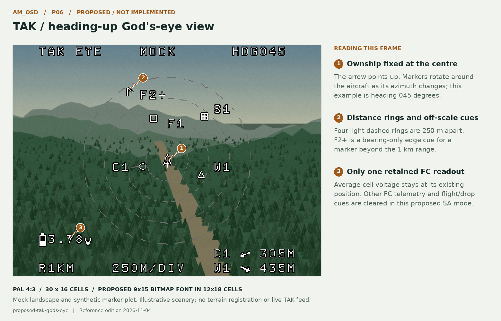
AirMetal · reference edition 2026-11-04 · PAL 4:3
Eleven canonical states. Current reconstructions retain the actual AM_OSD font; proposed views preview the thinner Fixed Medium 9x15 bitmap candidate in the board's existing 12x18 cells. Current, optional and proposed behaviour are labelled separately. All scenes, markers and telemetry are synthetic; these are not live captures or measured drop-accuracy results.
Board-format font candidates · not installed firmware
Proposed cards and previews use Fixed Medium 9x15; 7x13 is a smaller alternative. Both are public-domain bitmaps, encoded with the existing 12x18 cells and 54-byte glyph format. A replacement table is 13,824 bytes, with no runtime font engine. Sources, comparison and candidate C table

TAK situational awareness · synthetic firefighting markers
Average cell voltage is the only retained FC telemetry. The God's-eye arrow stays centred and points up while markers rotate with aircraft azimuth; its background is undimmed. The radar fan gives more space to distant markers ahead. Both layouts show the two nearest fresh markers with relative-direction arrows and distances at bottom right, independently of the plotted sector. Both work at any camera angle and default to forward scenery. Plotted markers are not registered to scenery. Select MGRS readout for own-position and selected-marker coordinates. View policy and future AUX integration
Loading marker preview…
F = fire location, C = crew, W = water, S = staging. A + label and outward chevron mean off-scale bearing only. The radar-style page plots TAK positions; it makes no sensor-detection claim. MGRS uses WGS84 with 1 m grid resolution, not a 1 m accuracy claim. AUX channel is unassigned; the coordinate card is a separate preview option.
P06 · Proposed / not implemented

P07 · Proposed / not implemented
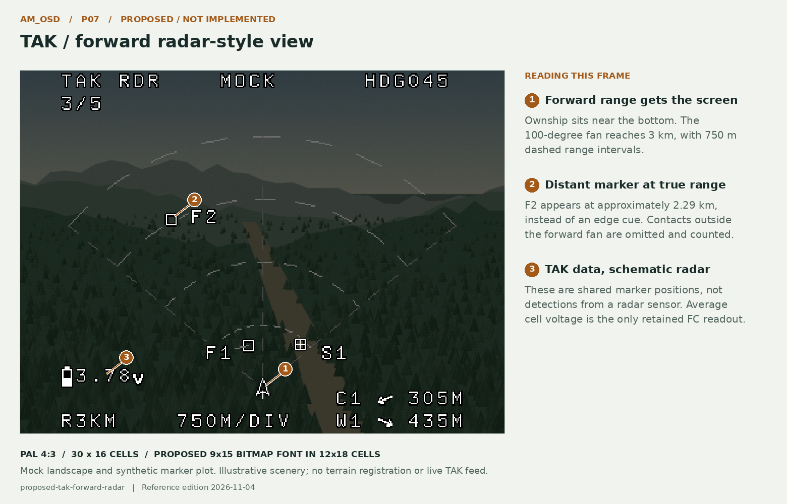
P08 · Proposed / not implemented
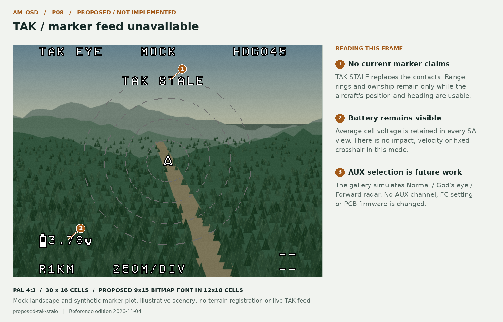
P09 · Proposed / not implemented
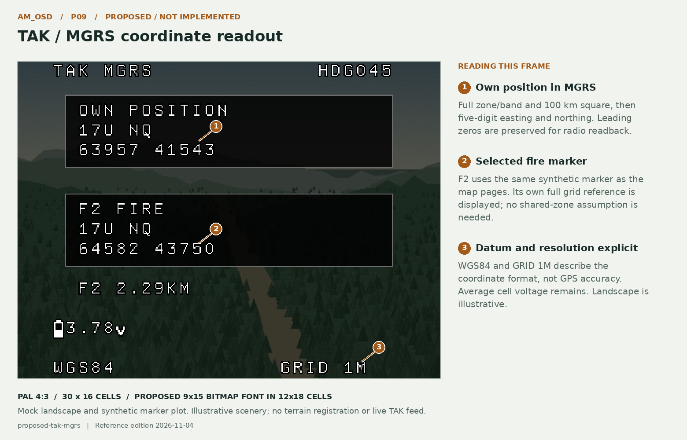
Interactive reference · no centre crosshair · offline prototype
The downward diamond always projects world down from roll/pitch. Height changes only the circle diameter, never diamond XY. With no usable GPS height/reference, the same diamond remains without a circle. FLAT identifies the current surface model; TER is reserved for actual height-grid use. There is no CCIP ADVISORY banner and barometric height is ignored. The diamond is an attitude reference, not a moving-package impact prediction. Both views retain the revised flight HUD.
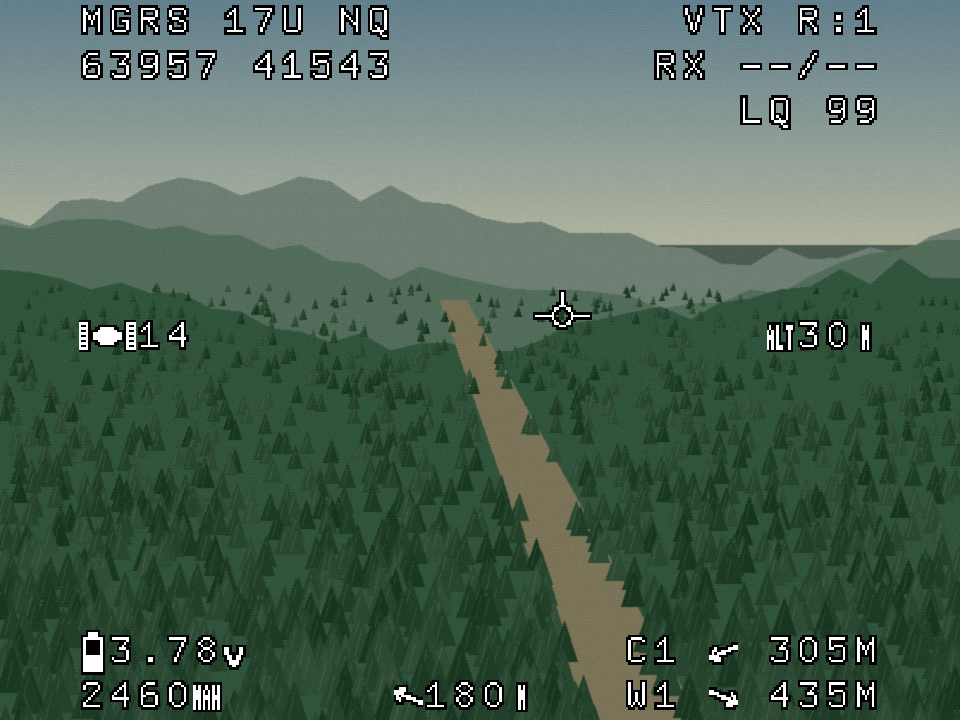
Loading reference assets…
Stationary release over one flat plane. Default assumed GPS-height error ±3 m, residual drift allowance 0.5 m/s and base surface allowance 1 m. The diamond is always world down. The circle is an uncalibrated illustrative envelope, not a probability or demonstrated drop-accuracy result. True CCIP and in-flight trajectory prediction are outside the current scope.
P01 · Proposed / not implemented
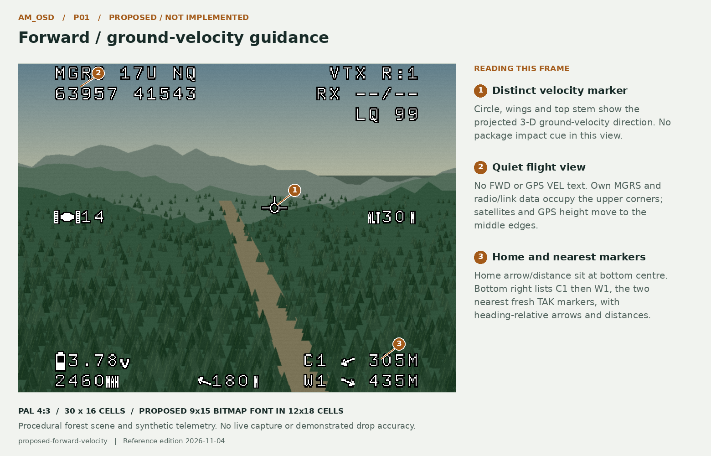
P02 · Proposed / not implemented
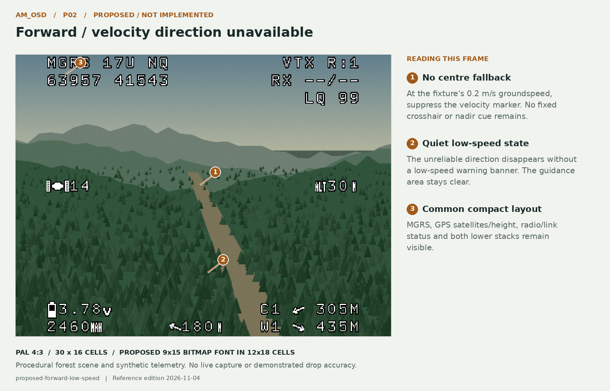
P03 · Proposed / not implemented
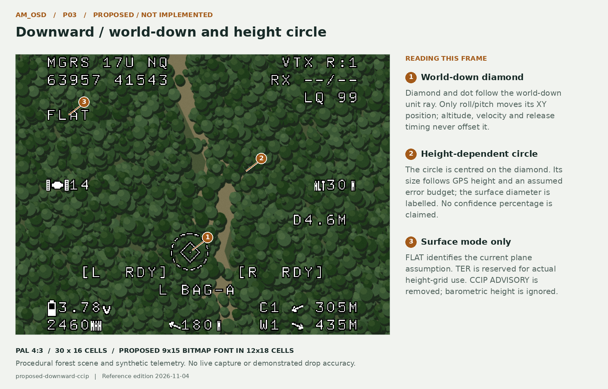
P04 · Proposed / not implemented
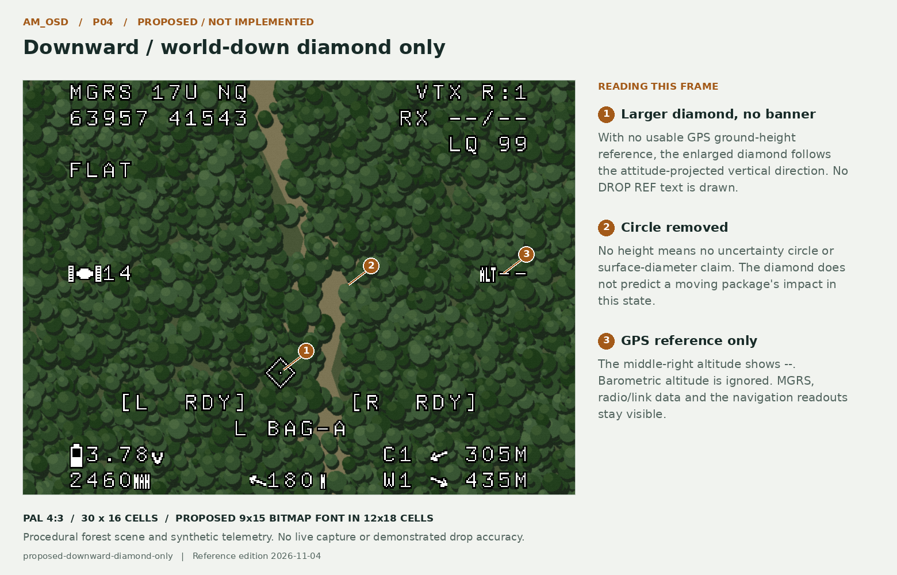
C01 · Current source reconstruction
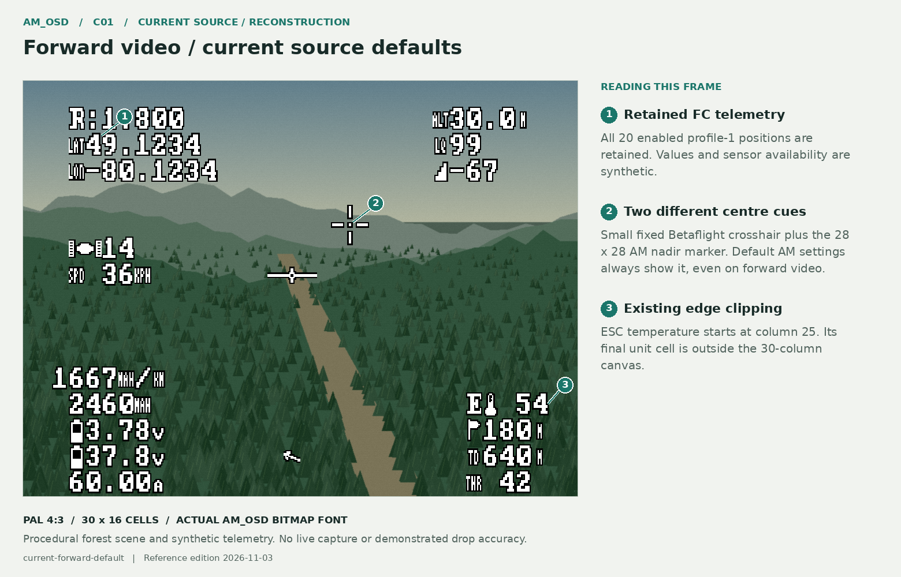
C02 · Current source reconstruction
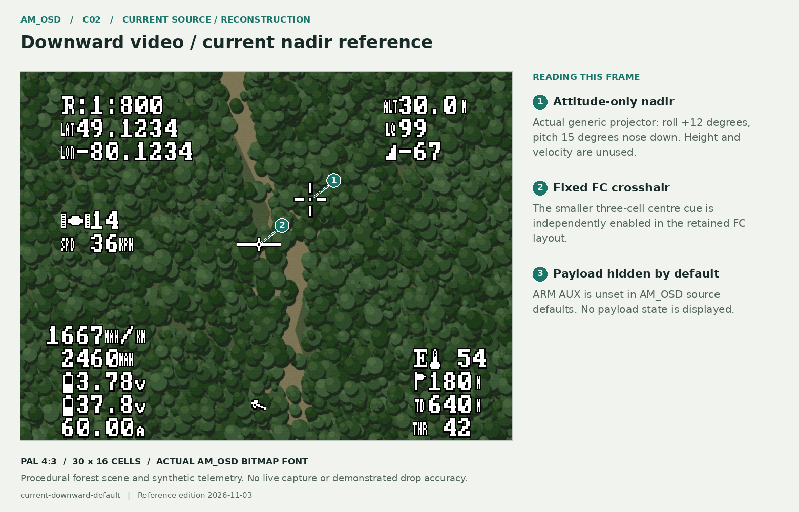
C03 · Existing optional settings
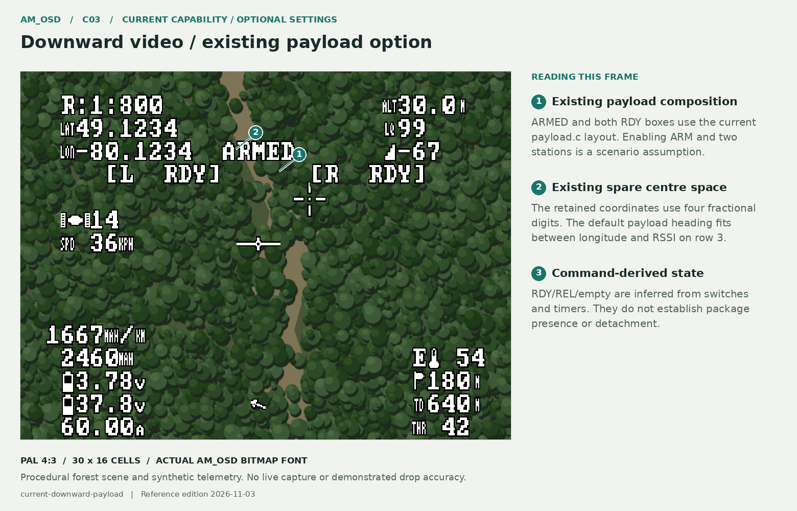